🎬 צפו קודם בסרטון
סרטון שקט עם כתוביות בונה את כל המוח צעד אחר צעד. אפשר לעצור, לחזור או לקפוץ לפרק:
🚀 המשימה שלכם: לאסוף 5 כוכבים
עונים על הבדיקות המהירות במדריך. כל תשובה נכונה מדליקה כוכב.
מה בונים
- תמונה של 5×5 ריבועים (פיקסלים). ריבוע כהה הוא 1, ריבוע ריק הוא 0.
- „מוח” שמורכב מ-25 משקלים (אחד לכל ריבוע) ומהטיה. המוח מחבר משקל × פיקסל וכך מקבל ציון.
- אחרי כל תמונה המוח בודק את התשובה שלו ומזיז מעט את המשקלים. ההזזה הזאת היא למידה.
- בסוף בודקים את המוח על תמונות שלא ראה. המטרה: 90% ומעלה.
לפני שמתחילים
- אקסל במחשב (אקסל באינטרנט גם עובד).
- מורידים את קובץ ההתחלה בראש הדף ופותחים אותו.
- תאים צהובים = מקלידים. תאים כחולים = נוסחאות (מקלידים או שכבר קיימות).
0הרעיון בדקה▶ צפו בחלק הזה 0:07
בינה מלאכותית לא „רואה” תפוח. היא רואה מספרים. המוח שלנו נותן לכל ריבוע משקל. ריבועים שמופיעים בתפוחים מקבלים משקל חיובי. ריבועים שמופיעים בבננות מקבלים משקל שלילי.
ציון = הטיה + (משקל 1 × פיקסל 1) + (משקל 2 × פיקסל 2) + … + (משקל 25 × פיקסל 25). ציון גדול אומר תפוח, ציון קטן אומר בננה. ההסתברות היא 1/(1+EXP(-ציון)): ציון 0 הוא 50%.
1מכירים את חוברת העבודה▶ צפו בחלק הזה 0:39
בחוברת יש שישה גיליונות (הלשוניות למטה):
| גיליון | למה הוא משמש |
|---|---|
| תמונות | 12 תמונות אימון + 4 משבצות פנויות לתמונות שלכם |
| למידה | חדר המנוע: כל שורה = המוח מסתכל על תמונה ומתקן את עצמו |
| מוח | לוח הבקרה: קצב למידה, תרשימים ועל מה המוח מסתכל |
| מבחן | 10 תמונות שהמוח לא ראה |
| ציור | מציירים תמונה ושואלים את המוח |
| נתונים | גיליון עזר (לא מקלידים בו) |
2מסתכלים על תמונות האימון▶ צפו בחלק הזה 0:39
- פותחים את הגיליון תמונות. לכל תמונה יש כותרת (תמונה 1 …) ותשובה בפינה: 1 = תפוח, 0 = בננה.
- מסתכלים על התפוחים. אילו ריבועים כהים בכל התפוחים? מסתכלים על הבננות. אילו ריבועים כהים בבננות ואף פעם לא בתפוחים?
- משבצות 13–16 ריקות. תשתמשו בהן בסוף.
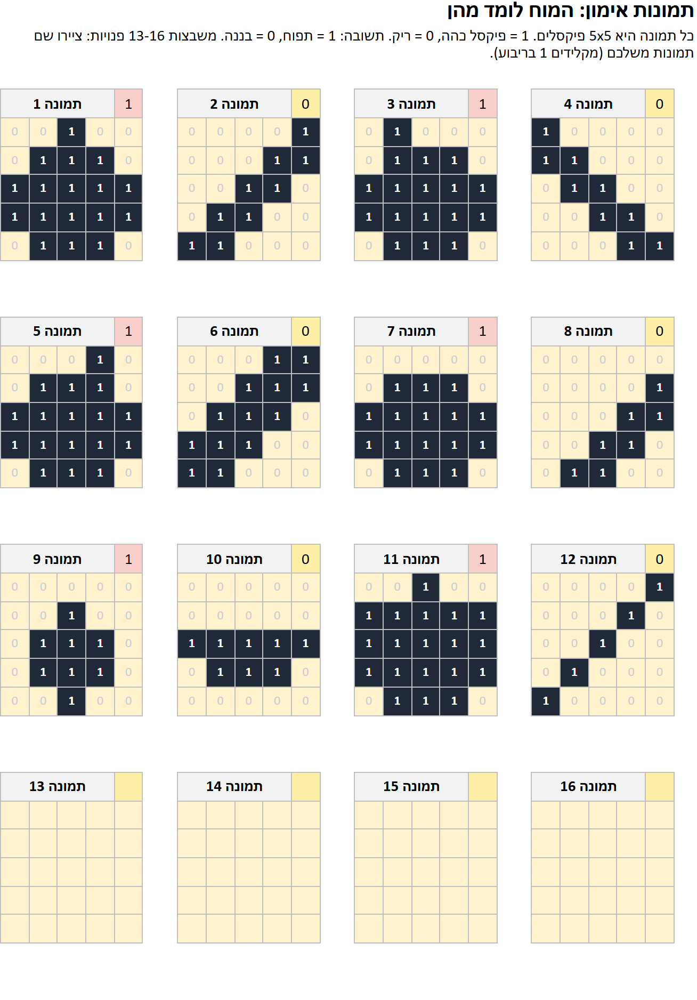
בגיליון תמונות, מה אומר 1 בריבוע?
3מלמדים את המוח: מקלידים 5 נוסחאות▶ צפו בחלק הזה 0:52
פותחים את הגיליון למידה. שורה 7 היא המוח ההתחלתי (הכול אפסים). בשורה 8 המוח מסתכל על תמונה 1. לוחצים על כל תא ומקלידים (או לוחצים על נוסחה כדי להעתיק אותה):
טיפ: לוחצים על נוסחה בטבלה כדי להעתיק אותה ואז מדביקים בתא.
| תא | נוסחה | משמעות |
|---|---|---|
| F8 | =L7+SUMPRODUCT(M8:AK8,AL7:BJ7) | הטיה + סכום של משקל × פיקסל |
| G8 | =1/(1+EXP(-F8)) | ההסתברות שזה תפוח |
| K8 | =E8-G8 | תשובה − הסתברות (כמה טעה) |
| L8 | =L7+$E$3*K8 | הטיה חדשה = הישנה + קצב למידה × שגיאה |
| AL8 | =AL7+$E$3*$K8*M8 | משקל חדש 1 = הישן + קצב למידה × שגיאה × פיקסל |
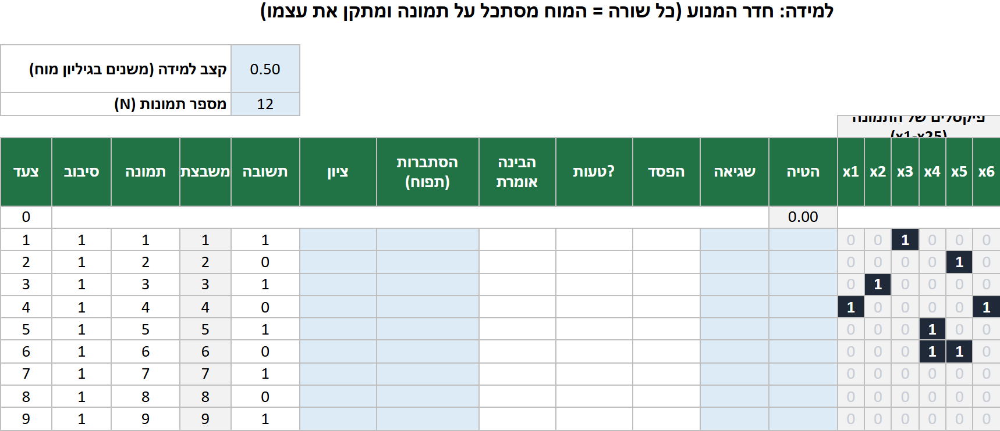
- מקלידים את הנוסחה ב-F8, G8, K8 ו-L8. לוחצים Enter אחרי כל אחת.
- מקלידים את נוסחת המשקל ב-AL8. אחר כך מסמנים AL8, תופסים את ידית המילוי וגוררים ימינה עד BJ8 (25 משקלים).
- עכשיו מסמנים F8 וגוררים עד BJ199… או קל יותר: לוחצים F8, מחזיקים Shift, לוחצים BJ199 ולוחצים Ctrl+D (מילוי למטה).
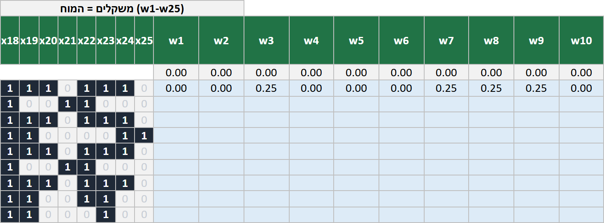
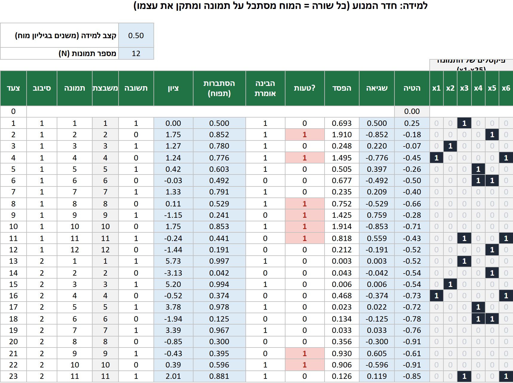
מה המוח עושה אחרי תשובה שגויה?
4צופים בלמידה▶ צפו בחלק הזה 2:17
- פותחים את הגיליון מוח. שני התרשימים מראים טעויות בכל סיבוב והפסד (כמה המוח טועה). שניהם צריכים לרדת.
- משנים את קצב הלמידה (התא הצהוב C4) ל-0.05, אחר כך 0.5, אחר כך 5. מסתכלים על התרשימים בכל פעם.
- איזה קצב מגיע ראשון ל-0 טעויות? ואיזה הכי איטי?
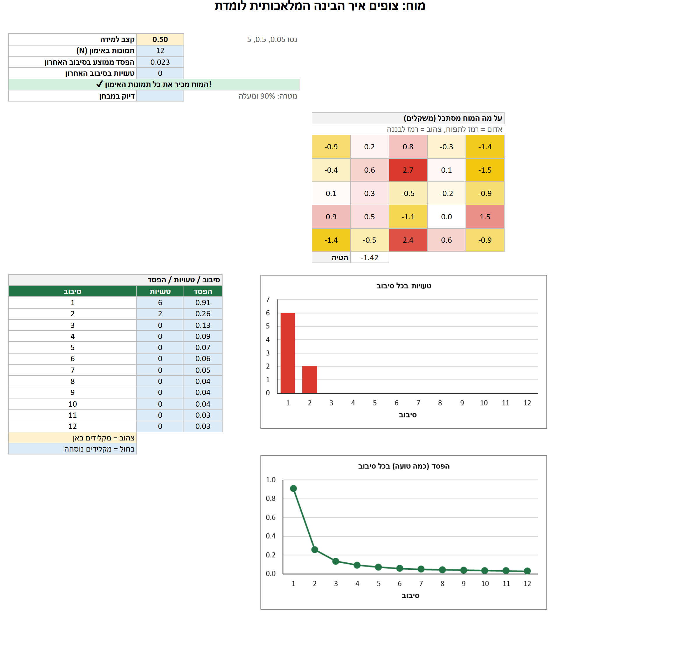
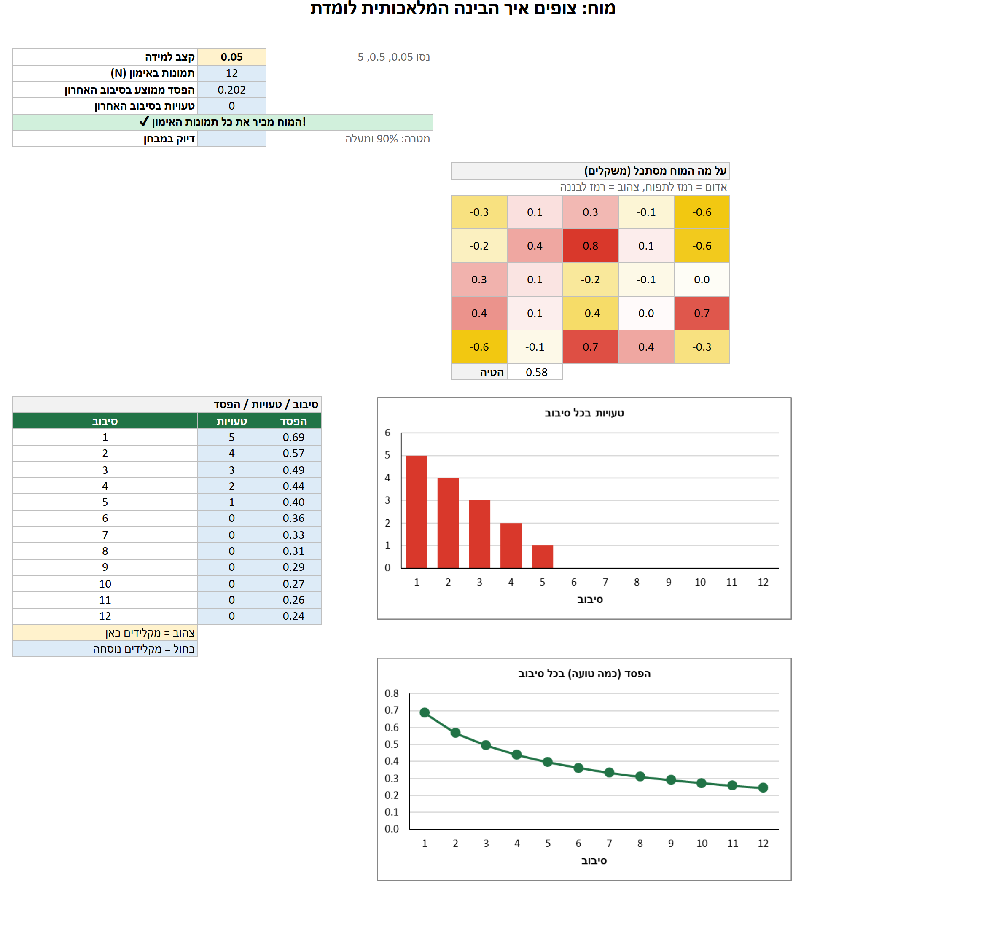
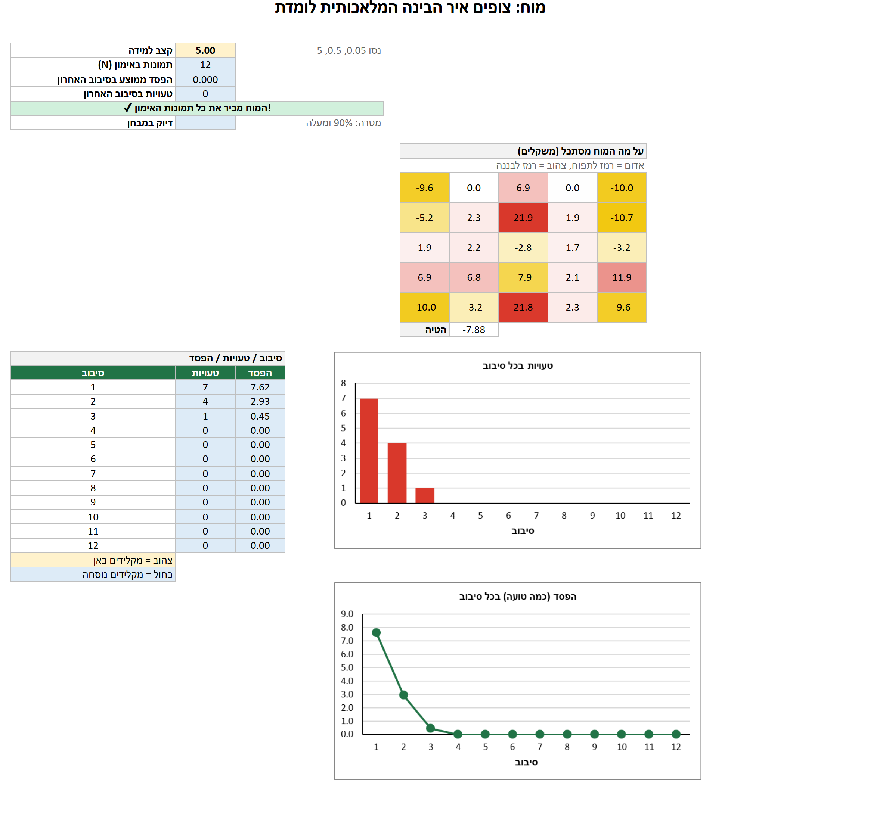
קצב למידה קטן מדי אומר…
5מה המוח למד?▶ צפו בחלק הזה 2:17
בגיליון מוח המפה 5×5 מציגה את 25 המשקלים. ריבועים אדומים הם רמזים לתפוח. ריבועים צהובים הם רמזים לבננה. לבנים לא חשובים.
- משווים את המפה לתמונות. האם הריבועים האדומים תואמים את המקומות הכהים בתפוחים?
- לאיזה ריבוע יש המשקל הגדול ביותר? למה אתם חושבים?
6בודקים את המוח▶ צפו בחלק הזה 2:52
פותחים את הגיליון מבחן. עשר התמונות חדשות. מקלידים את הנוסחאות האלה בשורה 4 וממלאים למטה עד שורה 13:
| תא | נוסחה | משמעות |
|---|---|---|
| C4 | ='למידה'!$L$199+SUMPRODUCT('נתונים'!D22:AB22,'למידה'!$AL$199:$BJ$199) | ציון של תמונת מבחן 1 |
| D4 | =1/(1+EXP(-C4)) | הסתברות |
| E4 | =IF(D4>=0.5,"תפוח","בננה") | תשובת המוח |
| F4 | =IF(B4=E4,1,0) | 1 אם נכון |
| C16 | =COUNT(F4:F13) | כמה תמונות |
| C17 | =SUM(F4:F13) | כמה נכון |
| C18 | =C17/C16 | דיוק (מעצבים כאחוזים) |
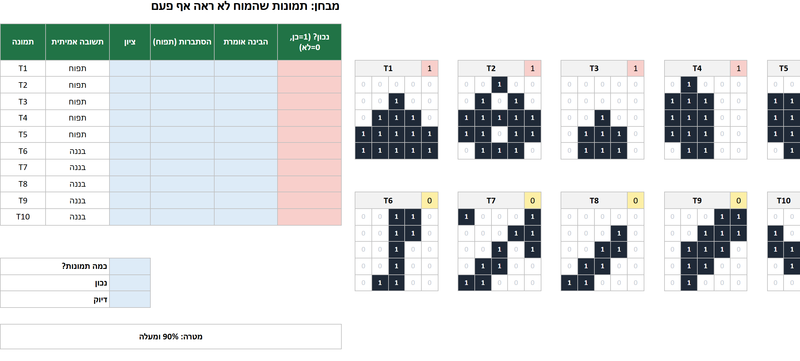
- מקלידים את הנוסחאות ב-C4, D4, E4 ו-F4. מסמנים C4:F4 וגוררים את ידית המילוי עד שורה 13.
- ב-C16, C17 ו-C18 מקלידים את שלוש נוסחאות הסיכום. ב-C18 לוחצים % בלשונית בית.
- מסתכלים על התמונות השגויות (באדום בעמודה F). מה משותף להן?
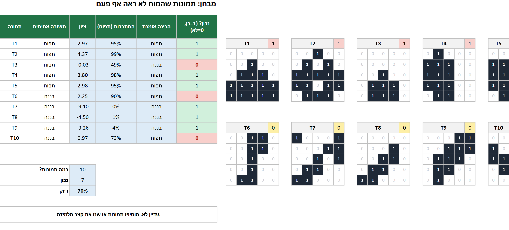
למה תמונות המבחן לא יכולות להיות חלק מקבוצת האימון?
7מציירים תמונה משלכם▶ צפו בחלק הזה 3:24
- פותחים את הגיליון ציור. מקלידים 1 בריבועים כדי לצייר. מנסים תפוח, בננה — ואז דוגמה חסרת משמעות כמו לוח שחמט.
- קוראים מה המוח אומר. האם הוא אי פעם אומר „אני לא יודע”?
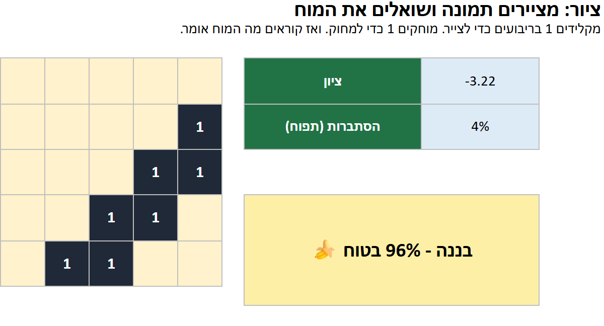
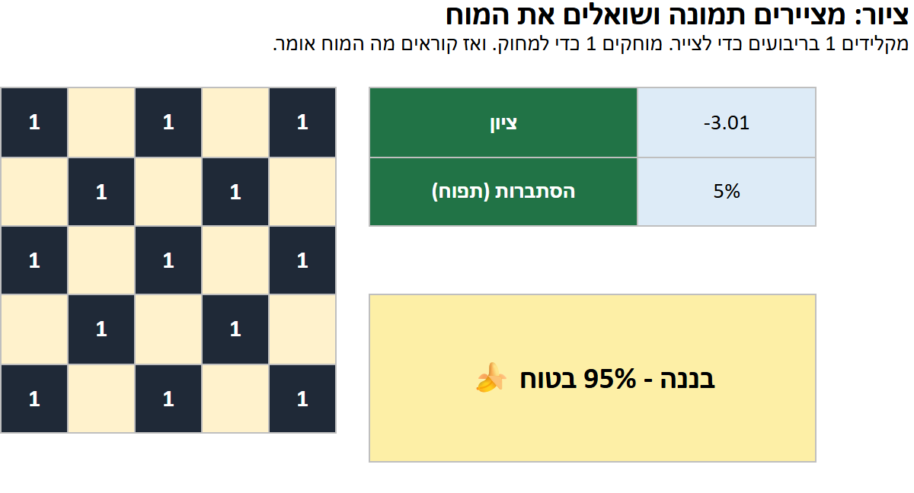
8המטרה: להגיע ל-90%▶ צפו בחלק הזה 3:38
מוסיפים תמונות אימון כדי שהמוח יפגוש יותר מצבים. משתמשים במשבצות הריקות 13–16 בגיליון תמונות: מקלידים 1 בריבועים ושמים את התשובה (1 או 0) בפינה.
- מציירים וריאציות משלכם: תפוח שהוזז למטה או שמאלה, תפוח קטן, בננה עומדת, בננה שהוזזה.
- לא מעתיקים את תמונות המבחן. אם מעתיקים, המוח ראה את התשובות והמבחן חסר ערך.
- הכול מתחשב מחדש לבד. מסתכלים על דיוק המבחן ועל שורת המטרה.
נתקעתם? נסו את 4 התמונות האלה (1 = ריבוע כהה). שני תפוחים ושתי בננות:
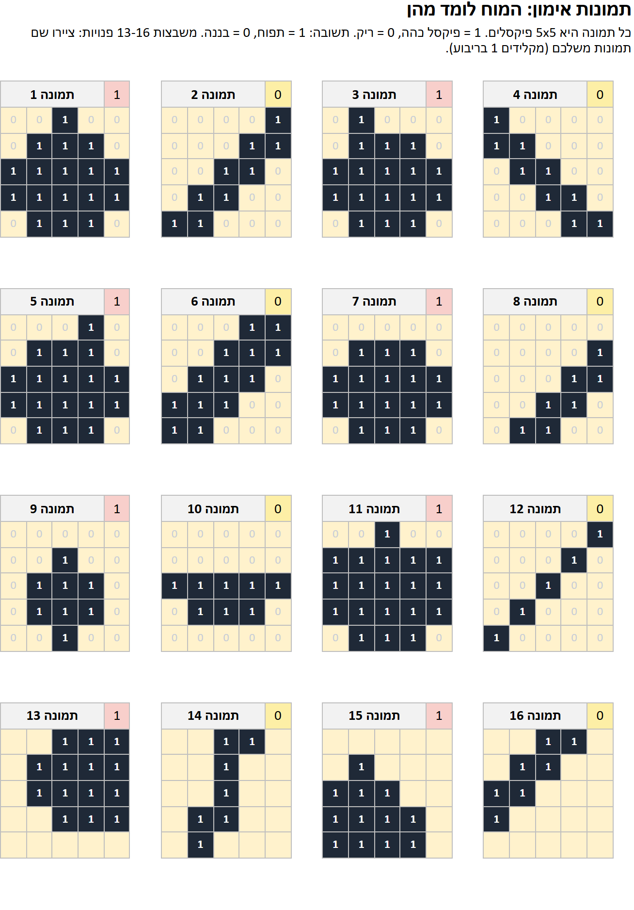
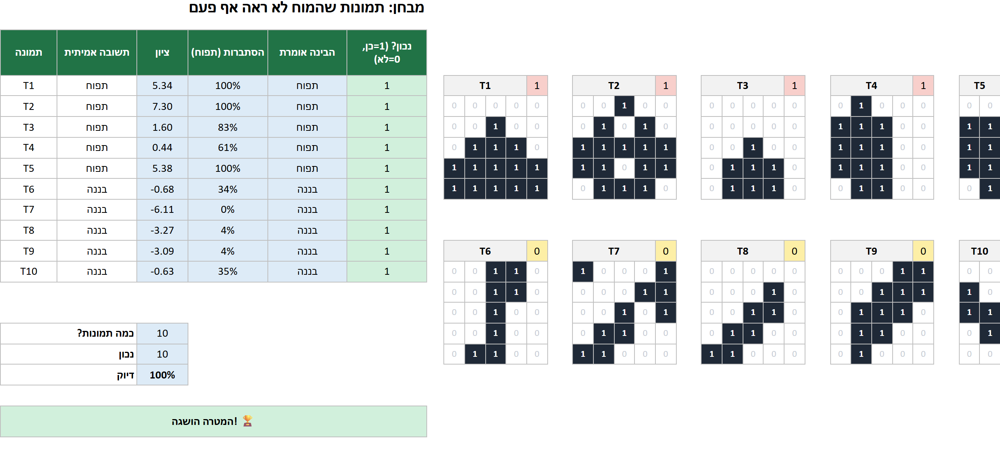
אילו תמונות אימון חדשות עוזרות הכי הרבה?
9חושבים על זה
- למה המוח נכשל בחלק מתמונות המבחן אף שהכיר את כל תמונות האימון?
- למה עזר להוסיף תמונות שצוירו אחרת? איך זה דומה לחבילת התיקון בשלב 1?
- מה קורה עם קצב למידה 5 וארבע התמונות הנוספות? למה?
- במה המוח הזה דומה ל-Teachable Machine? במה הוא שונה?
- בננה שצוירה עומדת מבלבלת את המוח. בינה מלאכותית אמיתית לתמונות מחפשת צורות בכל מקום בתמונה. למה זה טוב יותר?
התחנה הבאה: שלב 4 — מפת הבלש: איך בינה מלאכותית מחליטה, מוצג על מפה.
⭐ אתגר
- מגיעים ל-100% במבחן עם ארבע התמונות הנוספות בלבד.
- מציירים תמונה שגורמת למוח לומר תפוח ביותר מ-90% אף שזו בננה.
- מוצאים את קצב הלמידה שמגיע ל-0 טעויות במספר הסיבובים הקטן ביותר.
מילים שכדאי להכיר
| English | العربية | עברית |
|---|---|---|
| pixel | بكسل | פיקסל |
| weight | وزن | משקל |
| bias | انحياز | הטיה |
| score | نتيجة | ציון |
| probability | احتمال | הסתברות |
| learning rate | معدل التعلّم | קצב למידה |
| round (epoch) | جولة | סיבוב |
| loss | خسارة | הפסד |
| train | تدريب | אימון |
| test | اختبار | מבחן |
שאלות
בגיליון מוח כתוב „מלאו קודם את גיליון הלמידה”.
עדיין לא הקלדתם את הנוסחאות בגיליון למידה (או לא מילאתם אותן למטה עד שורה 199).
אני רואה #NAME? או #REF!.
שם גיליון בנוסחה שגוי. לוחצים על התא בגיליון במקום להקליד את שם הגיליון.
המספרים שלי שונים מעט מהמדריך.
אם שיניתם תמונה או את קצב הלמידה, המספרים משתנים. זה תקין.
אפשר להשתמש ב-Google Sheets?
כן לנוסחאות, אבל הצבעים והתרשימים עשויים להיראות אחרת. מומלץ אקסל.